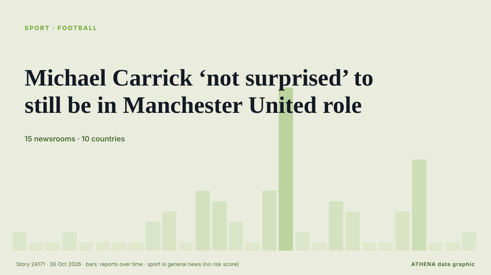

Michael Carrick ‘not surprised’ to still be in Manchester United role

AFC Bournemouth visit Old Trafford on Sunday buoyed by a European win against seven-time continental champions AC Milan. من The National
نشرته بشكل مستقل 15 مصدرًا في 10 دول منذ 23 أكتوبر، وأول من نشره The National؛ والتغطية تتراجع. تُؤرشف أخبار الرياضة والثقافة دون تقييم للمخاطر. الثقة 90٪ (مرتفعة)، وعدد المصادر المستقلة المؤكِّدة: 15، بمتوسط موثوقية للمصادر يبلغ 72٪. وسائل الإعلام حسب البلد: المملكة المتحدة (27), نيجيريا (4), الإمارات العربية المتحدة (2). التغطية: من 23 أكتوبر إلى 28 أكتوبر، 115 ساعة.
ما الذي تغيّر: 11 تقارير جديدة من 6 غرف أخبار خلال 24 ساعة حتى 30 أكتوبر.
العنوان الأول: Michael Carrick to stay on as Manchester United manager
تُعرض العناوين بالإنجليزية كما نُشرت.
نظرة سريعة
اختير وقُيِّم وكُتب وفق منهجية ATHENA المنشورة. لا يتدخل أي محرر في الأحداث بعينها. كيف يُنتَج ›
| 23 Oct 10:40 UTC | 1 |
|---|---|
| 23 Oct 16:40 UTC | 0 |
| 23 Oct 22:40 UTC | 0 |
| 24 Oct 04:40 UTC | 1 |
| 24 Oct 10:40 UTC | 0 |
| 24 Oct 16:40 UTC | 0 |
| 24 Oct 22:40 UTC | 0 |
| 25 Oct 04:40 UTC | 0 |
| 25 Oct 10:40 UTC | 2 |
| 25 Oct 16:40 UTC | 3 |
| 25 Oct 22:40 UTC | 0 |
| 26 Oct 04:40 UTC | 5 |
| 26 Oct 10:40 UTC | 4 |
| 26 Oct 16:40 UTC | 2 |
| 26 Oct 22:40 UTC | 0 |
| 27 Oct 04:40 UTC | 5 |
| 27 Oct 10:40 UTC | 15 |
| 27 Oct 16:40 UTC | 1 |
| 27 Oct 22:40 UTC | 0 |
| 28 Oct 04:40 UTC | 4 |
| 28 Oct 10:40 UTC | 3 |
| 28 Oct 16:40 UTC | 0 |
| 28 Oct 22:40 UTC | 0 |
| 29 Oct 04:40 UTC | 3 |
| 29 Oct 10:40 UTC | 8 |
| 29 Oct 16:40 UTC | 0 |
| 29 Oct 22:40 UTC | 0 |
| 30 Oct 04:40 UTC | 1 |
لماذا هذه الأرقام
الأهمية
الخطر
الثقة
التغطية — من نشر الخبر ومتى
العنوان كما نُشر · يفتح الأصل- The National · الإمارات العربية المتحدةMichael Carrick does not have support of all Man United players but manager alone can't be held responsible
- Daily Trust · نيجيرياCarrick cannot solve United’s problems with optimism alone
- Evening Standard (London) · المملكة المتحدةMichael Carrick sack decision looms as new favourite to be Manchester United manager emerges
- Evening Standard (London) · المملكة المتحدةManchester United 0-3 Bournemouth: Michael Carrick on the brink of being sacked
- Evening Standard (London) · المملكة المتحدةMichael Carrick responds to Manchester United sack claims after Old Trafford 'farewell'
- Al Jazeera English · قطرWill Michael Carrick be sacked? Man United manager says he doesn’t know
- Punch · نيجيرياEPL: I’m not expecting to be sacked, says Carrick
- Manchester Evening News · المملكة المتحدة'Something has got to change' - Harry Maguire backs Michael Carrick despite torrid Man United form
- Manchester Evening News · المملكة المتحدةMichael Carrick would never say this - but this is how Man United players are really behaving
- Evening Standard (London) · المملكة المتحدةManchester United told to hire 'best manager in the Premier League' as Michael Carrick sack looms
- Manchester Evening News · المملكة المتحدةMichael Carrick future LIVE: Man United sack timeline, Fernandes decision, board disagree
- Manchester Evening News · المملكة المتحدةManchester United chiefs report to Carrington amid Michael Carrick talks
- The National · الإمارات العربية المتحدةManchester United: Five managers who could replace Michael Carrick
- Belfast Telegraph · المملكة المتحدةMichael Carrick arrives at Man Utd training ground after talks about his future
- Manchester Evening News · المملكة المتحدةWhy Michael Carrick has reported to Carrington amid Manchester United crisis talks
- Manchester Evening News · المملكة المتحدةJose Mourinho's reaction to being booed after what Michael Carrick told Man United players
- Manchester Evening News · المملكة المتحدةMichael Carrick leaves Carrington as talks over his Manchester United future take place
- The Irish News (Belfast) · المملكة المتحدةManchester United stay tight-lipped on Michael Carrick future after day of talks
- Evening Standard (London) · المملكة المتحدةMichael Carrick sack news LIVE: Manchester United latest as shock decision made
- Manchester Evening News · المملكة المتحدةMichael Carrick arrives at Carrington but Manchester United confusion continues
- The Irish News (Belfast) · المملكة المتحدةMichael Carrick future uncertain as he arrives at Man Utd’s training ground
- Belfast Telegraph · المملكة المتحدةMichael Carrick future uncertain as he arrives at Man Utd’s training ground
- Belfast Telegraph · المملكة المتحدةMan United’s problems are much bigger than Michael Carrick – and much harder to fix
- CNA (Channel NewsAsia) · سنغافورةCarrick stays on as Man United manager, takes training after crisis talks
- Manchester Evening News · المملكة المتحدةMichael Carrick to stay on as Manchester United manager
- Cyprus Mail · قبرصCarrick stays on as Man United boss, takes training after crisis talks
- The Irish News (Belfast) · المملكة المتحدةMichael Carrick expected to remain in charge for Man Utd trip to Chelsea
- Belfast Telegraph · المملكة المتحدةMichael Carrick expected to remain in charge for Man Utd trip to Chelsea
- RTÉ News · أيرلنداCarrick to remain at Man United for at least the weekend
- Evening Standard (London) · المملكة المتحدةManchester United make shock Michael Carrick sack decision before Chelsea clash
- The Herald · زيمبابويMan Utd boss Michael Carrick to remain in charge vs Chelsea and given chance to turn situation around
- Manchester Evening News · المملكة المتحدةMichael Carrick's telling response as Man United make U-turn on sacking him
- Manchester Evening News · المملكة المتحدةPoll: Are Manchester United right to give Michael Carrick another chance?
- Vanguard · نيجيرياCarrick to remain Man Utd boss for Chelsea clash – Reports
- Free Malaysia Today · ماليزياCarrick to remain Man Utd boss for Chelsea clash, say reports
- Al Jazeera English · قطرCarrick stays on as Manchester United manager for crucial Chelsea match
- Punch · نيجيرياEPL: Carrick to remain Man Utd boss for Chelsea clash — Reports
- Evening Standard (London) · المملكة المتحدةManchester United: Gary Nevile reveals surprise after Michael Carrick sack prediction
- Manchester Evening News · المملكة المتحدةMan United are in a huge mess of their own making - we all know how it ends for Michael Carrick
- Manchester Evening News · المملكة المتحدةMan United latest: Michael Carrick gets key backing as players issued fresh warning